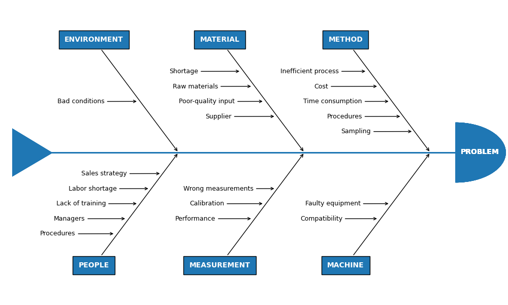

Note
Go to the end to download the full example code
Ishikawa Diagram#
Ishikawa Diagrams, fishbone diagrams, herringbone diagrams, or cause-and-effect diagrams are used to identify problems in a system by showing how causes and effects are linked. Source: https://en.wikipedia.org/wiki/Ishikawa_diagram
import matplotlib.pyplot as plt
from matplotlib.patches import Polygon, Wedge
# Create the fishbone diagram
fig, ax = plt.subplots(figsize=(10, 6), layout='constrained')
ax.set_xlim(-5, 5)
ax.set_ylim(-5, 5)
ax.axis('off')
def problems(data: str,
problem_x: float, problem_y: float,
prob_angle_x: float, prob_angle_y: float):
"""
Draw each problem section of the Ishikawa plot.
Parameters
----------
data : str
The category name.
problem_x, problem_y : float, optional
The `X` and `Y` positions of the problem arrows (`Y` defaults to zero).
prob_angle_x, prob_angle_y : float, optional
The angle of the problem annotations. They are angled towards
the tail of the plot.
Returns
-------
None.
"""
ax.annotate(str.upper(data), xy=(problem_x, problem_y),
xytext=(prob_angle_x, prob_angle_y),
fontsize='10',
color='white',
weight='bold',
xycoords='data',
verticalalignment='center',
horizontalalignment='center',
textcoords='offset fontsize',
arrowprops=dict(arrowstyle="->", facecolor='black'),
bbox=dict(boxstyle='square',
facecolor='tab:blue',
pad=0.8))
def causes(data: list, cause_x: float, cause_y: float,
cause_xytext=(-9, -0.3), top: bool = True):
"""
Place each cause to a position relative to the problems
annotations.
Parameters
----------
data : indexable object
The input data. IndexError is
raised if more than six arguments are passed.
cause_x, cause_y : float
The `X` and `Y` position of the cause annotations.
cause_xytext : tuple, optional
Adjust to set the distance of the cause text from the problem
arrow in fontsize units.
top : bool
Returns
-------
None.
"""
for index, cause in enumerate(data):
# First cause annotation is placed in the middle of the problems arrow
# and each subsequent cause is plotted above or below it in succession.
# [<x pos>, [<y pos top>, <y pos bottom>]]
coords = [[0, [0, 0]],
[0.23, [0.5, -0.5]],
[-0.46, [-1, 1]],
[0.69, [1.5, -1.5]],
[-0.92, [-2, 2]],
[1.15, [2.5, -2.5]]]
if top:
cause_y += coords[index][1][0]
else:
cause_y += coords[index][1][1]
cause_x -= coords[index][0]
ax.annotate(cause, xy=(cause_x, cause_y),
horizontalalignment='center',
xytext=cause_xytext,
fontsize='9',
xycoords='data',
textcoords='offset fontsize',
arrowprops=dict(arrowstyle="->",
facecolor='black'))
def draw_body(data: dict):
"""
Place each section in its correct place by changing
the coordinates on each loop.
Parameters
----------
data : dict
The input data (can be list or tuple). ValueError is
raised if more than six arguments are passed.
Returns
-------
None.
"""
second_sections = []
third_sections = []
# Resize diagram to automatically scale in response to the number
# of problems in the input data.
if len(data) == 1 or len(data) == 2:
spine_length = (-2.1, 2)
head_pos = (2, 0)
tail_pos = ((-2.8, 0.8), (-2.8, -0.8), (-2.0, -0.01))
first_section = [1.6, 0.8]
elif len(data) == 3 or len(data) == 4:
spine_length = (-3.1, 3)
head_pos = (3, 0)
tail_pos = ((-3.8, 0.8), (-3.8, -0.8), (-3.0, -0.01))
first_section = [2.6, 1.8]
second_sections = [-0.4, -1.2]
else: # len(data) == 5 or 6
spine_length = (-4.1, 4)
head_pos = (4, 0)
tail_pos = ((-4.8, 0.8), (-4.8, -0.8), (-4.0, -0.01))
first_section = [3.5, 2.7]
second_sections = [1, 0.2]
third_sections = [-1.5, -2.3]
# Change the coordinates of the annotations on each loop.
for index, problem in enumerate(data.values()):
top_row = True
cause_arrow_y = 1.7
if index % 2 != 0: # Plot problems below the spine.
top_row = False
y_prob_angle = -16
cause_arrow_y = -1.7
else: # Plot problems above the spine.
y_prob_angle = 16
# Plot the 3 sections in pairs along the main spine.
if index in (0, 1):
prob_arrow_x = first_section[0]
cause_arrow_x = first_section[1]
elif index in (2, 3):
prob_arrow_x = second_sections[0]
cause_arrow_x = second_sections[1]
else:
prob_arrow_x = third_sections[0]
cause_arrow_x = third_sections[1]
if index > 5:
raise ValueError(f'Maximum number of problems is 6, you have entered '
f'{len(data)}')
# draw main spine
ax.plot(spine_length, [0, 0], color='tab:blue', linewidth=2)
# draw fish head
ax.text(head_pos[0] + 0.1, head_pos[1] - 0.05, 'PROBLEM', fontsize=10,
weight='bold', color='white')
semicircle = Wedge(head_pos, 1, 270, 90, fc='tab:blue')
ax.add_patch(semicircle)
# draw fishtail
triangle = Polygon(tail_pos, fc='tab:blue')
ax.add_patch(triangle)
# Pass each category name to the problems function as a string on each loop.
problems(list(data.keys())[index], prob_arrow_x, 0, -12, y_prob_angle)
# Start the cause function with the first annotation being plotted at
# the cause_arrow_x, cause_arrow_y coordinates.
causes(problem, cause_arrow_x, cause_arrow_y, top=top_row)
# Input data
categories = {
'Method': ['Time consumption', 'Cost', 'Procedures', 'Inefficient process',
'Sampling'],
'Machine': ['Faulty equipment', 'Compatibility'],
'Material': ['Poor-quality input', 'Raw materials', 'Supplier',
'Shortage'],
'Measurement': ['Calibration', 'Performance', 'Wrong measurements'],
'Environment': ['Bad conditions'],
'People': ['Lack of training', 'Managers', 'Labor shortage',
'Procedures', 'Sales strategy']
}
draw_body(categories)
plt.show()